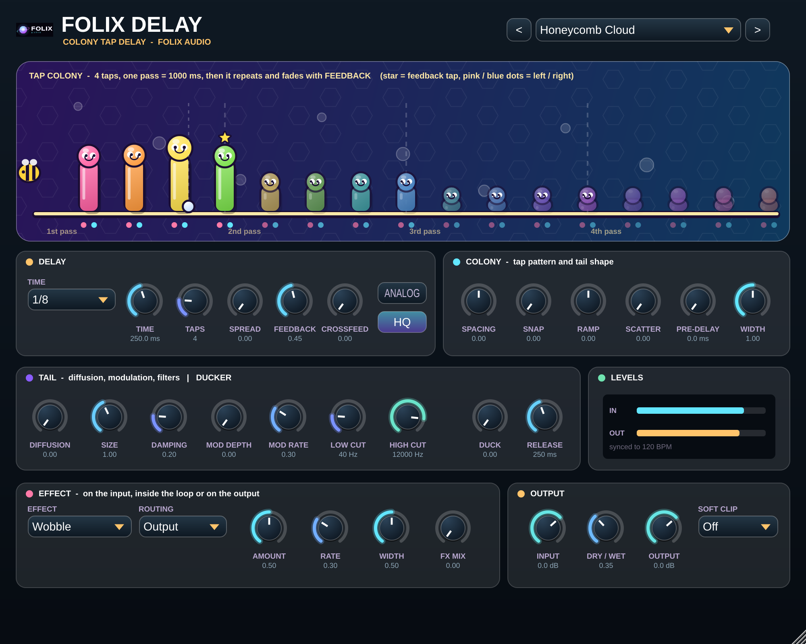
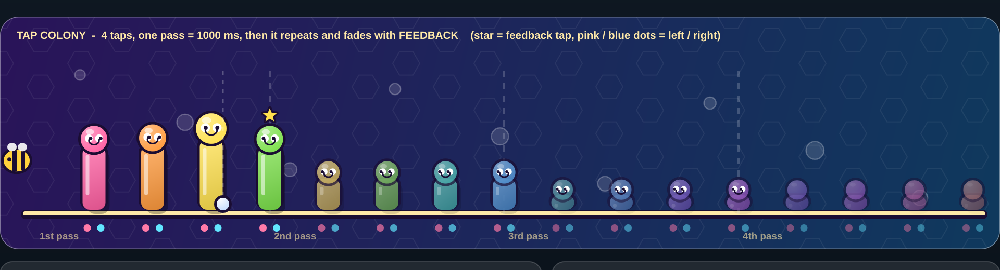

Folix Delay
Colony-tap delay with soft HQ repeats, ducking, and FX in/loop/out — Folix Delay.
Screenshots below; audio and video demos TBA.

What it does
Folix Delay is a two-stage delay that treats echoes the way a modern reverb treats space: a COLONY of 1–16 taps reads one delay line, then a filtered, diffused, modulated feedback loop builds the tail. Time runs free in milliseconds or synced to the host, with Spread and Crossfeed for stereo and ping-pong.
HQ mode (on by default) reads each tap with a 16-point windowed-sinc interpolator and keeps Analog / Warm clip anti-aliased, with no added latency. Repeats after the first echo gently lose top end so the pattern stays readable. Put Wobble, Diffusion, Chorus, Phaser, Flanger or Freq Shift on the input, inside the loop or on the output; ducking keeps the wet under the dry, and ten factory presets get you started.
Key features
- COLONY multi-tap pattern (1–16 taps) with Spacing, Snap, Ramp, Scatter, Pre-Delay and Width
- Free or host-synced time, with Spread and Crossfeed for ping-pong
- HQ mode: 16-point sinc taps and anti-aliased Analog / Warm clip, no extra latency
- Softer repeats plus Diffusion, Size, modulation, Low / High Cut and ducking
- One insert effect × three routings: Wobble, Diffusion, Chorus, Phaser, Flanger, Freq Shift
- Soft Clip, equal-power Dry/Wet and 10 factory presets

Audio demos
Audio and video demos of Folix Delay are on the way.
Specifications
| Version | 2.0.0 |
|---|---|
| Formats | Windows: VST3 · Mac: AU, VST3 and Standalone |
| Platforms | Windows 10+ (64-bit); macOS (universal) |
| System requirements | 64-bit VST3 or AU host, or Standalone on Mac; HQ on by default (turn off to save CPU) |
| Installs as | Delay.vst3 / Delay.component (won’t overwrite an older Folix Delay.vst3) |
| Demo | TBA |
Get the full version
Buy the full version of Folix Delay — no demo mute. Secure checkout on Gumroad.
Buy Folix Delay — $29.99